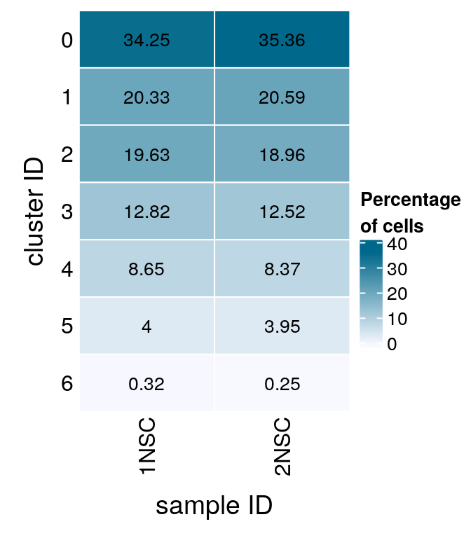
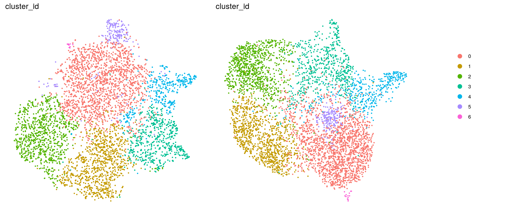
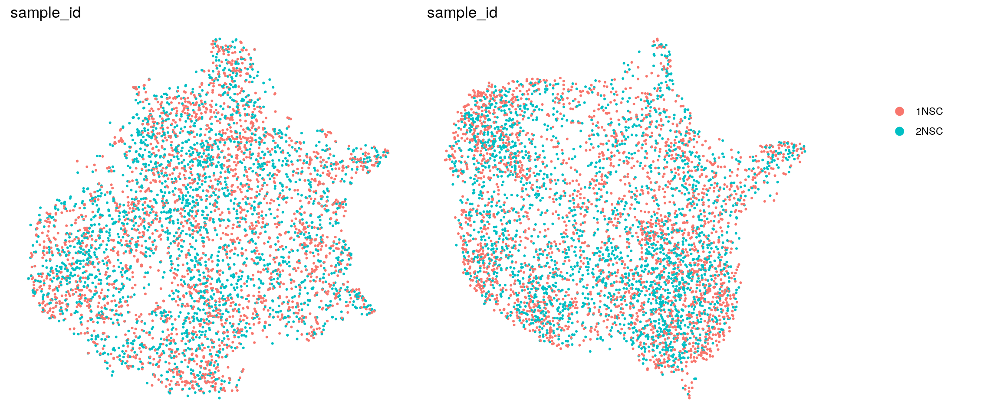
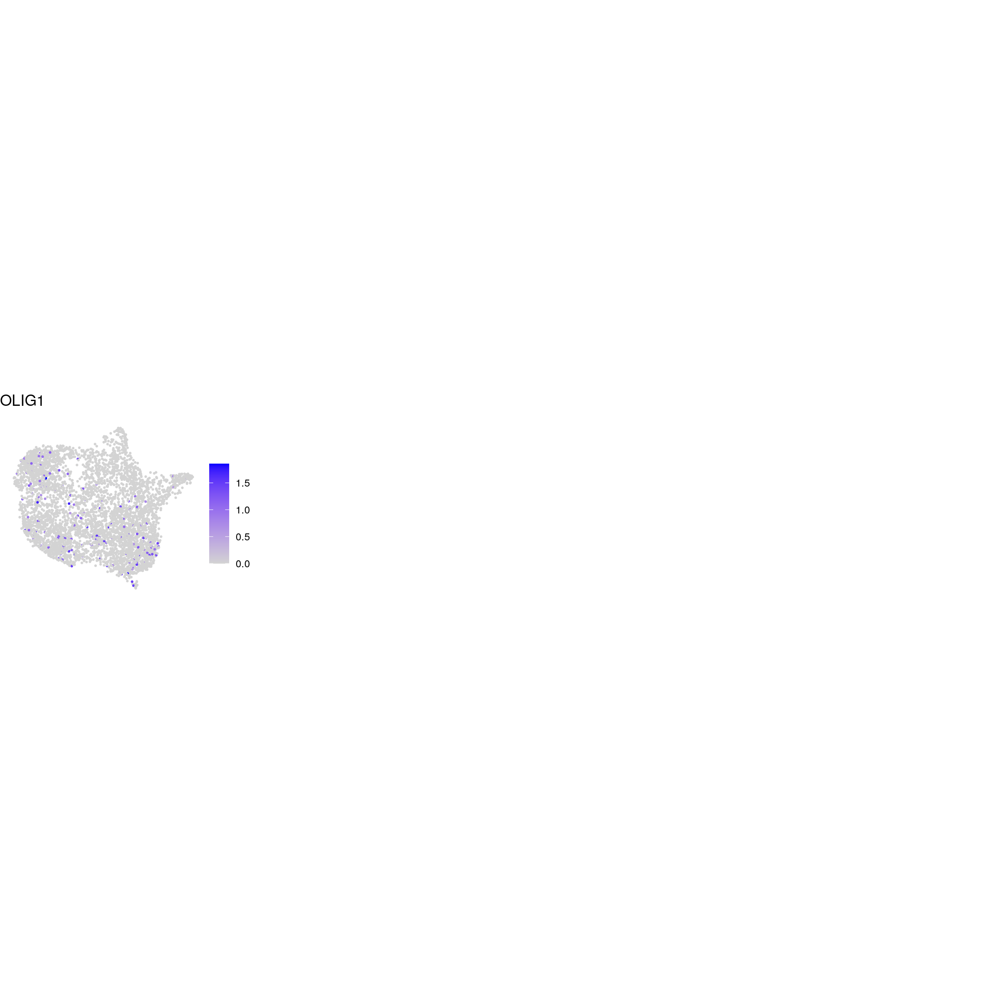
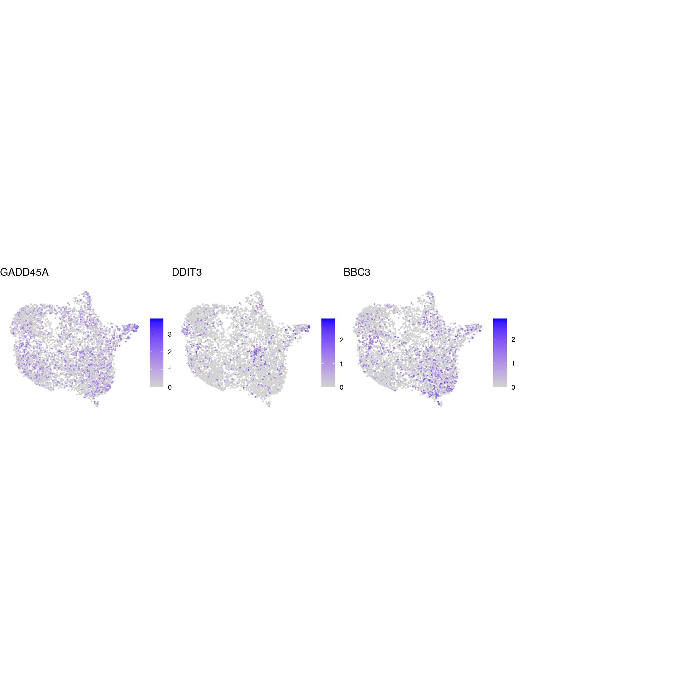

Last updated: 2020-07-02
Checks: 7 0
Knit directory: neural_scRNAseq/
This reproducible R Markdown analysis was created with workflowr (version 1.6.2). The Checks tab describes the reproducibility checks that were applied when the results were created. The Past versions tab lists the development history.
Great! Since the R Markdown file has been committed to the Git repository, you know the exact version of the code that produced these results.
Great job! The global environment was empty. Objects defined in the global environment can affect the analysis in your R Markdown file in unknown ways. For reproduciblity it’s best to always run the code in an empty environment.
The command set.seed(20200522) was run prior to running the code in the R Markdown file. Setting a seed ensures that any results that rely on randomness, e.g. subsampling or permutations, are reproducible.
Great job! Recording the operating system, R version, and package versions is critical for reproducibility.
Nice! There were no cached chunks for this analysis, so you can be confident that you successfully produced the results during this run.
Great job! Using relative paths to the files within your workflowr project makes it easier to run your code on other machines.
Great! You are using Git for version control. Tracking code development and connecting the code version to the results is critical for reproducibility.
The results in this page were generated with repository version a9389d9. See the Past versions tab to see a history of the changes made to the R Markdown and HTML files.
Note that you need to be careful to ensure that all relevant files for the analysis have been committed to Git prior to generating the results (you can use wflow_publish or wflow_git_commit). workflowr only checks the R Markdown file, but you know if there are other scripts or data files that it depends on. Below is the status of the Git repository when the results were generated:
Ignored files:
Ignored: .DS_Store
Ignored: .Rhistory
Ignored: .Rproj.user/
Ignored: ._.DS_Store
Ignored: ._Rplots.pdf
Ignored: .__workflowr.yml
Ignored: ._neural_scRNAseq.Rproj
Ignored: analysis/.DS_Store
Ignored: analysis/.Rhistory
Ignored: analysis/._.DS_Store
Ignored: analysis/._01-preprocessing.Rmd
Ignored: analysis/._01-preprocessing.html
Ignored: analysis/._02.1-SampleQC.Rmd
Ignored: analysis/._03-filtering.Rmd
Ignored: analysis/._04-clustering.Rmd
Ignored: analysis/._04-clustering.knit.md
Ignored: analysis/._04.1-cell_cycle.Rmd
Ignored: analysis/._05-annotation.Rmd
Ignored: analysis/._NSC-1-clustering.Rmd
Ignored: analysis/._NSC-2-annotation.Rmd
Ignored: analysis/.__site.yml
Ignored: analysis/._additional_filtering.Rmd
Ignored: analysis/._additional_filtering_clustering.Rmd
Ignored: analysis/._index.Rmd
Ignored: analysis/01-preprocessing_cache/
Ignored: analysis/02-1-SampleQC_cache/
Ignored: analysis/02-quality_control_cache/
Ignored: analysis/02.1-SampleQC_cache/
Ignored: analysis/03-filtering_cache/
Ignored: analysis/04-clustering_cache/
Ignored: analysis/04.1-cell_cycle_cache/
Ignored: analysis/05-annotation_cache/
Ignored: analysis/NSC-1-clustering_cache/
Ignored: analysis/additional_filtering_cache/
Ignored: analysis/additional_filtering_clustering_cache/
Ignored: analysis/sample5_QC_cache/
Ignored: data/.DS_Store
Ignored: data/._.DS_Store
Ignored: data/._.smbdeleteAAA17ed8b4b
Ignored: data/._known_NSC_markers.R
Ignored: data/._known_cell_type_markers.R
Ignored: data/._metadata.csv
Ignored: data/data_sushi/
Ignored: data/filtered_feature_matrices/
Ignored: output/.DS_Store
Ignored: output/._.DS_Store
Ignored: output/NSC_1_clustering.rds
Ignored: output/additional_filtering.rds
Ignored: output/figures/
Ignored: output/sce_01_preprocessing.rds
Ignored: output/sce_02_quality_control.rds
Ignored: output/sce_03_filtering.rds
Ignored: output/sce_preprocessing.rds
Ignored: output/so_04_1_cell_cycle.rds
Ignored: output/so_04_clustering.rds
Ignored: output/so_additional_filtering_clustering.rds
Untracked files:
Untracked: Rplots.pdf
Untracked: analysis/additional_filtering.Rmd
Untracked: analysis/additional_filtering_clustering.Rmd
Untracked: analysis/sample5_QC.Rmd
Untracked: analysis/tabsets.Rmd
Untracked: scripts/
Unstaged changes:
Modified: analysis/_site.yml
Note that any generated files, e.g. HTML, png, CSS, etc., are not included in this status report because it is ok for generated content to have uncommitted changes.
These are the previous versions of the repository in which changes were made to the R Markdown (analysis/NSC-2-annotation.Rmd) and HTML (docs/NSC-2-annotation.html) files. If you’ve configured a remote Git repository (see ?wflow_git_remote), click on the hyperlinks in the table below to view the files as they were in that past version.
| File | Version | Author | Date | Message |
|---|---|---|---|---|
| Rmd | 6d0742b | khembach | 2020-07-02 | wflow_publish(c(“analysis/NSC-1-clustering.Rmd”, “analysis/NSC-2-annotation.Rmd”, |
library(ComplexHeatmap)
library(cowplot)
library(ggplot2)
library(dplyr)
library(muscat)
library(purrr)
library(RColorBrewer)
library(viridis)
library(scran)
library(Seurat)
library(SingleCellExperiment)
library(stringr)
library(RCurl)
library(BiocParallel)so <- readRDS(file.path("output", "NSC_1_clustering.rds"))
sce <- as.SingleCellExperiment(so, assay = "RNA")
colData(sce) <- as.data.frame(colData(sce)) %>%
mutate_if(is.character, as.factor) %>%
DataFrame(row.names = colnames(sce))cluster_cols <- grep("res.[0-9]", colnames(colData(sce)), value = TRUE)
sapply(colData(sce)[cluster_cols], nlevels)integrated_snn_res.0.1 integrated_snn_res.0.2 integrated_snn_res.0.4
4 5 7
integrated_snn_res.0.8 integrated_snn_res.1 integrated_snn_res.1.2
11 16 17
integrated_snn_res.2
24 # set cluster IDs to resolution 0.4 clustering
so <- SetIdent(so, value = "integrated_snn_res.0.4")
so@meta.data$cluster_id <- Idents(so)
sce$cluster_id <- Idents(so)
(n_cells <- table(sce$cluster_id, sce$sample_id))
1NSC 2NSC
0 2853 2973
1 1694 1731
2 1635 1594
3 1068 1053
4 721 704
5 333 332
6 27 21fqs <- prop.table(n_cells, margin = 2)
mat <- as.matrix(unclass(fqs))
Heatmap(mat,
col = rev(brewer.pal(11, "RdGy")[-6]),
name = "Frequency",
cluster_rows = FALSE,
cluster_columns = FALSE,
row_names_side = "left",
row_title = "cluster_id",
column_title = "sample_id",
column_title_side = "bottom",
rect_gp = gpar(col = "white"),
cell_fun = function(i, j, x, y, width, height, fill)
grid.text(round(mat[j, i] * 100, 2), x = x, y = y,
gp = gpar(col = "white", fontsize = 8)))
We assign each cell a cell cycle scores and visualize them in the DR plots. We use known G2/M and S phase markers that come with the Seurat package. The markers are anticorrelated and cells that to not express the markers should be in G1 phase.
We compute cell cycle phase:
DefaultAssay(so) <- "RNA"
# A list of cell cycle markers, from Tirosh et al, 2015
cc_file <- getURL("https://raw.githubusercontent.com/hbc/tinyatlas/master/cell_cycle/Homo_sapiens.csv")
cc_genes <- read.csv(text = cc_file)
# match the marker genes to the features
m <- match(cc_genes$geneID[cc_genes$phase == "S"],
str_split(rownames(GetAssayData(so)),
pattern = "\\.", simplify = TRUE)[,1])
s_genes <- rownames(GetAssayData(so))[m]
(s_genes <- s_genes[!is.na(s_genes)]) [1] "ENSG00000012963.UBR7" "ENSG00000049541.RFC2"
[3] "ENSG00000051180.RAD51" "ENSG00000073111.MCM2"
[5] "ENSG00000075131.TIPIN" "ENSG00000076003.MCM6"
[7] "ENSG00000076248.UNG" "ENSG00000077514.POLD3"
[9] "ENSG00000092470.WDR76" "ENSG00000092853.CLSPN"
[11] "ENSG00000093009.CDC45" "ENSG00000094804.CDC6"
[13] "ENSG00000095002.MSH2" "ENSG00000100297.MCM5"
[15] "ENSG00000101868.POLA1" "ENSG00000104738.MCM4"
[17] "ENSG00000111247.RAD51AP1" "ENSG00000112312.GMNN"
[19] "ENSG00000117748.RPA2" "ENSG00000118412.CASP8AP2"
[21] "ENSG00000119969.HELLS" "ENSG00000131153.GINS2"
[23] "ENSG00000132646.PCNA" "ENSG00000132780.NASP"
[25] "ENSG00000136492.BRIP1" "ENSG00000136982.DSCC1"
[27] "ENSG00000143476.DTL" "ENSG00000144354.CDCA7"
[29] "ENSG00000151725.CENPU" "ENSG00000156802.ATAD2"
[31] "ENSG00000159259.CHAF1B" "ENSG00000162607.USP1"
[33] "ENSG00000163950.SLBP" "ENSG00000167325.RRM1"
[35] "ENSG00000168496.FEN1" "ENSG00000171848.RRM2"
[37] "ENSG00000174371.EXO1" "ENSG00000175305.CCNE2"
[39] "ENSG00000176890.TYMS" "ENSG00000197299.BLM"
[41] "ENSG00000198056.PRIM1" "ENSG00000276043.UHRF1" m <- match(cc_genes$geneID[cc_genes$phase == "G2/M"],
str_split(rownames(GetAssayData(so)),
pattern = "\\.", simplify = TRUE)[,1])
g2m_genes <- rownames(GetAssayData(so))[m]
(g2m_genes <- g2m_genes[!is.na(g2m_genes)]) [1] "ENSG00000010292.NCAPD2" "ENSG00000011426.ANLN"
[3] "ENSG00000013810.TACC3" "ENSG00000072571.HMMR"
[5] "ENSG00000075218.GTSE1" "ENSG00000080986.NDC80"
[7] "ENSG00000087586.AURKA" "ENSG00000088325.TPX2"
[9] "ENSG00000089685.BIRC5" "ENSG00000092140.G2E3"
[11] "ENSG00000094916.CBX5" "ENSG00000100401.RANGAP1"
[13] "ENSG00000102974.CTCF" "ENSG00000111665.CDCA3"
[15] "ENSG00000112742.TTK" "ENSG00000113810.SMC4"
[17] "ENSG00000114346.ECT2" "ENSG00000115163.CENPA"
[19] "ENSG00000117399.CDC20" "ENSG00000117650.NEK2"
[21] "ENSG00000117724.CENPF" "ENSG00000120802.TMPO"
[23] "ENSG00000123485.HJURP" "ENSG00000123975.CKS2"
[25] "ENSG00000126787.DLGAP5" "ENSG00000129195.PIMREG"
[27] "ENSG00000131747.TOP2A" "ENSG00000134222.PSRC1"
[29] "ENSG00000134690.CDCA8" "ENSG00000136108.CKAP2"
[31] "ENSG00000137804.NUSAP1" "ENSG00000137807.KIF23"
[33] "ENSG00000138160.KIF11" "ENSG00000138182.KIF20B"
[35] "ENSG00000138778.CENPE" "ENSG00000139354.GAS2L3"
[37] "ENSG00000142945.KIF2C" "ENSG00000143228.NUF2"
[39] "ENSG00000143401.ANP32E" "ENSG00000143815.LBR"
[41] "ENSG00000148773.MKI67" "ENSG00000157456.CCNB2"
[43] "ENSG00000158402.CDC25C" "ENSG00000164104.HMGB2"
[45] "ENSG00000169607.CKAP2L" "ENSG00000169679.BUB1"
[47] "ENSG00000170312.CDK1" "ENSG00000173207.CKS1B"
[49] "ENSG00000175063.UBE2C" "ENSG00000175216.CKAP5"
[51] "ENSG00000178999.AURKB" "ENSG00000184661.CDCA2"
[53] "ENSG00000188229.TUBB4B" "ENSG00000189159.JPT1" so <- CellCycleScoring(so, s.features = s_genes, g2m.features = g2m_genes,
set.ident = TRUE)
DefaultAssay(so) <- "integrated"cs <- sample(colnames(so), 5e3)
.plot_dr <- function(so, dr, id)
DimPlot(so, cells = cs, group.by = id, reduction = dr, pt.size = 0.4) +
guides(col = guide_legend(nrow = 11,
override.aes = list(size = 3, alpha = 1))) +
theme_void() + theme(aspect.ratio = 1)
ids <- c("cluster_id", "sample_id", "Phase")
for (id in ids) {
cat("## ", id, "\n")
p1 <- .plot_dr(so, "tsne", id)
lgd <- get_legend(p1)
p1 <- p1 + theme(legend.position = "none")
p2 <- .plot_dr(so, "umap", id) + theme(legend.position = "none")
ps <- plot_grid(plotlist = list(p1, p2), nrow = 1)
p <- plot_grid(ps, lgd, nrow = 1, rel_widths = c(1, 0.2))
print(p)
cat("\n\n")
}

scranWe identify candidate marker genes for each cluster that enable a separation of that group from all other groups.
scran_markers <- findMarkers(sce,
groups = sce$cluster_id, block = sce$sample_id,
direction = "up", lfc = 2, full.stats = TRUE)We aggregate the cells to pseudobulks and plot the average expression of the condidate marker genes in each of the clusters.
gs <- lapply(scran_markers, function(u) rownames(u)[u$Top == 1])
## candidate cluster markers
lapply(gs, function(x) str_split(x, pattern = "\\.", simplify = TRUE)[,2])$`0`
[1] "NOC2L" "IGFBP5" "SFRP2" "PTN"
$`1`
[1] "NOC2L" "SFRP2" "HIST1H4C" "FABP7" "PTN"
$`2`
[1] "CENPF" "PTN"
$`3`
[1] "S100A11" "TPM1"
$`4`
[1] "ANXA1" "VIM" "TAGLN" "HSP90AA1"
$`5`
[1] "SFRP2" "FABP7" "PTN" "EIF4EBP1" "SLC3A2"
$`6`
[1] "TAGLN3" "CRABP1"sub <- sce[unique(unlist(gs)), ]
pbs <- aggregateData(sub, assay = "logcounts", by = "cluster_id", fun = "mean")
mat <- t(muscat:::.scale(assay(pbs)))
## remove the Ensembl ID from the gene names
colnames(mat) <- str_split(colnames(mat), pattern = "\\.", simplify = TRUE)[,2]
Heatmap(mat,
name = "scaled avg.\nexpression",
col = viridis(10),
cluster_rows = FALSE,
cluster_columns = FALSE,
row_names_side = "left",
row_title = "cluster_id",
rect_gp = gpar(col = "white"))## source file with list of known marker genes
source(file.path("data", "known_NSC_markers.R"))
fs <- lapply(fs, sapply, function(g)
grep(pattern = paste0("\\.", g, "$"), rownames(sce), value = TRUE)
)
fs <- lapply(fs, function(x) unlist(x[lengths(x) !=0]) )
gs <- gsub(".*\\.", "", unlist(fs))
ns <- vapply(fs, length, numeric(1))
ks <- rep.int(names(fs), ns)
labs <- lapply(fs, function(x) gsub(".*\\.", "",x))# split cells by cluster
cs_by_k <- split(colnames(sce), sce$cluster_id)
# compute cluster-marker means
ms_by_cluster <- lapply(fs, function(gs) vapply(cs_by_k, function(i)
Matrix::rowMeans(logcounts(sce)[gs, i, drop = FALSE]),
numeric(length(gs))))
# prep. for plotting & scale b/w 0 and 1
mat <- do.call("rbind", ms_by_cluster)
mat <- muscat:::.scale(mat)
rownames(mat) <- gs
cols <- muscat:::.cluster_colors[seq_along(fs)]
cols <- setNames(cols, names(fs))
row_anno <- rowAnnotation(
df = data.frame(label = factor(ks, levels = names(fs))),
col = list(label = cols), gp = gpar(col = "white"))
# percentage of cells from each of the samples per cluster
sample_props <- prop.table(n_cells, margin = 1)
col_mat <- as.matrix(unclass(sample_props))
sample_cols <- c("#882255", "#CC6677")
sample_cols <- setNames(sample_cols, colnames(col_mat))
col_anno <- HeatmapAnnotation(
perc_sample = anno_barplot(col_mat, gp = gpar(fill = sample_cols),
height = unit(2, "cm"),
border = FALSE),
annotation_label = "fraction of sample\nin cluster",
gap = unit(10, "points"))
col_lgd <- Legend(labels = names(sample_cols),
title = "sample",
legend_gp = gpar(fill = sample_cols))
hm <- Heatmap(mat,
name = "scaled avg.\nexpression",
col = viridis(10),
cluster_rows = FALSE,
cluster_columns = FALSE,
row_names_side = "left",
column_title = "cluster_id",
column_title_side = "bottom",
column_names_side = "bottom",
column_names_rot = 0,
column_names_centered = TRUE,
rect_gp = gpar(col = "white"),
left_annotation = row_anno,
top_annotation = col_anno)
draw(hm, annotation_legend_list = list(col_lgd))# downsample to 5000 cells
cs <- sample(colnames(sce), 5e3)
sub <- subset(so, cells = cs)
# UMAPs colored by marker-expression
for (m in seq_along(fs)) {
cat("## ", names(fs)[m], "\n")
ps <- lapply(seq_along(fs[[m]]), function(i) {
if (!fs[[m]][i] %in% rownames(so)) return(NULL)
FeaturePlot(sub, features = fs[[m]][i], reduction = "umap", pt.size = 0.4) +
theme(aspect.ratio = 1, legend.position = "none") +
ggtitle(labs[[m]][i]) + theme_void() + theme(aspect.ratio = 1)
})
# arrange plots in grid
ps <- ps[!vapply(ps, is.null, logical(1))]
p <- plot_grid(plotlist = ps, ncol = 4, label_size = 10)
print(p)
cat("\n\n")
}

sessionInfo()R version 4.0.0 (2020-04-24)
Platform: x86_64-pc-linux-gnu (64-bit)
Running under: Ubuntu 16.04.6 LTS
Matrix products: default
BLAS: /usr/local/R/R-4.0.0/lib/libRblas.so
LAPACK: /usr/local/R/R-4.0.0/lib/libRlapack.so
locale:
[1] LC_CTYPE=en_US.UTF-8 LC_NUMERIC=C
[3] LC_TIME=en_US.UTF-8 LC_COLLATE=en_US.UTF-8
[5] LC_MONETARY=en_US.UTF-8 LC_MESSAGES=en_US.UTF-8
[7] LC_PAPER=en_US.UTF-8 LC_NAME=C
[9] LC_ADDRESS=C LC_TELEPHONE=C
[11] LC_MEASUREMENT=en_US.UTF-8 LC_IDENTIFICATION=C
attached base packages:
[1] parallel stats4 grid stats graphics grDevices utils
[8] datasets methods base
other attached packages:
[1] BiocParallel_1.22.0 RCurl_1.98-1.2
[3] stringr_1.4.0 Seurat_3.1.5
[5] scran_1.16.0 SingleCellExperiment_1.10.1
[7] SummarizedExperiment_1.18.1 DelayedArray_0.14.0
[9] matrixStats_0.56.0 Biobase_2.48.0
[11] GenomicRanges_1.40.0 GenomeInfoDb_1.24.0
[13] IRanges_2.22.2 S4Vectors_0.26.1
[15] BiocGenerics_0.34.0 viridis_0.5.1
[17] viridisLite_0.3.0 RColorBrewer_1.1-2
[19] purrr_0.3.4 muscat_1.2.0
[21] dplyr_0.8.5 ggplot2_3.3.0
[23] cowplot_1.0.0 ComplexHeatmap_2.4.2
[25] workflowr_1.6.2
loaded via a namespace (and not attached):
[1] backports_1.1.7 circlize_0.4.9
[3] blme_1.0-4 igraph_1.2.5
[5] plyr_1.8.6 lazyeval_0.2.2
[7] TMB_1.7.16 splines_4.0.0
[9] listenv_0.8.0 scater_1.16.0
[11] digest_0.6.25 foreach_1.5.0
[13] htmltools_0.4.0 gdata_2.18.0
[15] lmerTest_3.1-2 magrittr_1.5
[17] memoise_1.1.0 cluster_2.1.0
[19] doParallel_1.0.15 ROCR_1.0-11
[21] limma_3.44.1 globals_0.12.5
[23] annotate_1.66.0 prettyunits_1.1.1
[25] colorspace_1.4-1 rappdirs_0.3.1
[27] ggrepel_0.8.2 blob_1.2.1
[29] xfun_0.14 jsonlite_1.6.1
[31] crayon_1.3.4 genefilter_1.70.0
[33] lme4_1.1-23 zoo_1.8-8
[35] ape_5.3 survival_3.1-12
[37] iterators_1.0.12 glue_1.4.1
[39] gtable_0.3.0 zlibbioc_1.34.0
[41] XVector_0.28.0 leiden_0.3.3
[43] GetoptLong_0.1.8 BiocSingular_1.4.0
[45] future.apply_1.5.0 shape_1.4.4
[47] scales_1.1.1 DBI_1.1.0
[49] edgeR_3.30.0 Rcpp_1.0.4.6
[51] xtable_1.8-4 progress_1.2.2
[53] clue_0.3-57 reticulate_1.16
[55] dqrng_0.2.1 bit_1.1-15.2
[57] rsvd_1.0.3 tsne_0.1-3
[59] htmlwidgets_1.5.1 httr_1.4.1
[61] gplots_3.0.3 ellipsis_0.3.1
[63] ica_1.0-2 farver_2.0.3
[65] pkgconfig_2.0.3 XML_3.99-0.3
[67] uwot_0.1.8 locfit_1.5-9.4
[69] labeling_0.3 tidyselect_1.1.0
[71] rlang_0.4.6 reshape2_1.4.4
[73] later_1.0.0 AnnotationDbi_1.50.0
[75] munsell_0.5.0 tools_4.0.0
[77] RSQLite_2.2.0 ggridges_0.5.2
[79] evaluate_0.14 yaml_2.2.1
[81] knitr_1.28 bit64_0.9-7
[83] fs_1.4.1 fitdistrplus_1.1-1
[85] caTools_1.18.0 RANN_2.6.1
[87] pbapply_1.4-2 future_1.17.0
[89] nlme_3.1-148 whisker_0.4
[91] pbkrtest_0.4-8.6 compiler_4.0.0
[93] plotly_4.9.2.1 beeswarm_0.2.3
[95] png_0.1-7 variancePartition_1.18.0
[97] tibble_3.0.1 statmod_1.4.34
[99] geneplotter_1.66.0 stringi_1.4.6
[101] lattice_0.20-41 Matrix_1.2-18
[103] nloptr_1.2.2.1 vctrs_0.3.0
[105] pillar_1.4.4 lifecycle_0.2.0
[107] lmtest_0.9-37 GlobalOptions_0.1.1
[109] RcppAnnoy_0.0.16 BiocNeighbors_1.6.0
[111] data.table_1.12.8 bitops_1.0-6
[113] irlba_2.3.3 patchwork_1.0.0
[115] httpuv_1.5.2 colorRamps_2.3
[117] R6_2.4.1 promises_1.1.0
[119] KernSmooth_2.23-17 gridExtra_2.3
[121] vipor_0.4.5 codetools_0.2-16
[123] boot_1.3-25 MASS_7.3-51.6
[125] gtools_3.8.2 assertthat_0.2.1
[127] DESeq2_1.28.1 rprojroot_1.3-2
[129] rjson_0.2.20 withr_2.2.0
[131] sctransform_0.2.1 GenomeInfoDbData_1.2.3
[133] hms_0.5.3 tidyr_1.1.0
[135] glmmTMB_1.0.1 minqa_1.2.4
[137] rmarkdown_2.1 DelayedMatrixStats_1.10.0
[139] Rtsne_0.15 git2r_0.27.1
[141] numDeriv_2016.8-1.1 ggbeeswarm_0.6.0